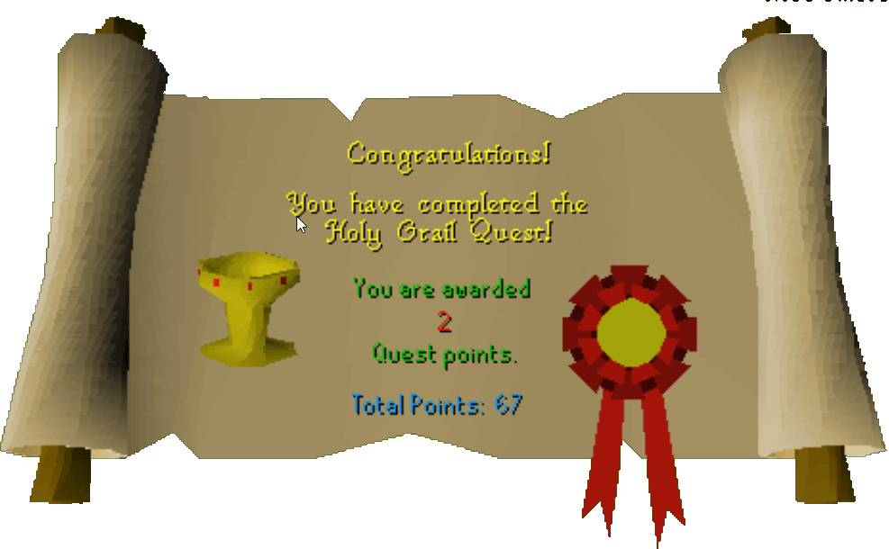

Holy Grail
Description: King Arthur is sending out his knights on a quest for the famous holy grail. If you are a knight of the round table go to King Arthur for further orders.Difficulty: Experienced
Length: Long
Required Quests:
- Merlin's Crystal
Items & Skills Needed:
- 20 Attack
- Must be able to defeat a level 120 Black Knight Titan with melee (can be flinched)
Recommended:
- 43 Prayer
- Decent weapon and armor
Reward: 2 Quest points, 15,300 Defence XP, 11,000 Prayer XP
Instructions:
Talk to King Arthur in the Castle in Camelot. He will tell you that he wants you to go on a quest to retrieve the Holy Grail and that for more details you should talk to Merlin.
Go up the stairs, enter the lab, and talk to Merlin. He will tell you about Sir Galahad who lives west of McGrubor's woods.
Go to Brother Galahad, who lives in a house directly west of McGrubor's Woods. Talk to him. He will tell you about how he once found the Grail by accident but it didn't feel right to take the Grail from its home so he left it there.
Now you must go to Port Sarim and take a boat ride to Entrana Island; make sure you don't have any weapons or armor with you.
Once you are on Entrana go to the church and talk to the High Priest. Tell him that you are interested in finding the Holy Grail. The Crone will interrupt and start talking to you about the Fisher King. She will tell you that the Fisher King is in pain and you must blow the whistle where all six heads point to. Also ask her about the whistle and how to obtain it.
Now go back to Brother Galahad. Talk to him and try to get him to give you an item. He will give you a Holy Table Napkin.
Go to Draynor Manor, located directly north of Draynor Village. Go to the top floor and go to the room all the way south. You must have the napkin in your inventory, or you will not be able to see the Magic Whistle. Pick up two Magic Whistles as you will need a second later on in the quest.
Now, you must prepare to fight the level 126 Black Knight Titan. You should have a prayer level of 43 so you can use protect from melee. You must bring along your Excalibur from the Merlin's Crystal quest. If you do not have it for any reason, you will need to get another by talking to the Lady of the Lake. You will need this to finish off the knight.
Once you are done preparing you must go to Brimhaven. Once you are there, head all the way west until you reach the poison scorpions. Once you get to the poison scorpions, head toward the north. Past the horseshoe-shaped cluster of gold ore rocks is a platform on stilts. Simply stand under it and blow the whistle.
Now it's time to defeat the Black Knight Titan. Head west, talk to the knight, and then engage in combat. This is the hardest part of the whole quest.
Now head towards the small peninsula. Once you cross the bridge, the fisherman is just to the southeast. Talk to the fisherman and ask how to get inside the nearby castle. He will tell you to pick up one of the bells and ring it.
Go west of the fisherman and you will see the castle. A Grail Bell is lying outside the wall to the northwest. Ring it and a Grail Maiden will bring you into the castle.
Climb the central staircase and go to the eastern room to speak with the Fisher King.He asks you to find his son, Percival — a Knight of the Round Table — and return him to his father's castle.
Now you must go to Camelot (blow the whistle to get out of the castle).
Once you are in Camelot, talk to King Arthur and ask him about the Fisher King's son Percival. He will give you a magical feather that will guide you to the place you want to go.
To speed things up, go to Goblin Village and enter the hut on the far right (east). Right click on the sacks and prod them and then right click to open them. Sir Percival will escape and talk to you, taking the spare whistle to use to re-enter his father's castle.
Return to the Fisher King's Castle. You will notice the countryside is green and flourishing again, and the Black Knight Titan is gone. Enter the castle through the door and go up the central staircase to find that Percival is now king. Talk to him to receive his thanks.
Go back down the central staircase and make your way to the eastern tower. Climb the staircase, then the ladder. Take the Holy Grail.
Return to Camelot and speak with King Arthur to receive your reward.
Congratulations, Quest Complete!

This quest guide was written by Elyria1. Thanks to stormer and faital03 for corrections.
This quest guide was entered into the database on Tue, Jun 01, 2004, at 04:44:52 PM by Pirate Bob49 and CJH and was last updated on Mon, Aug 02, 2004, at 08:45:25 AM.